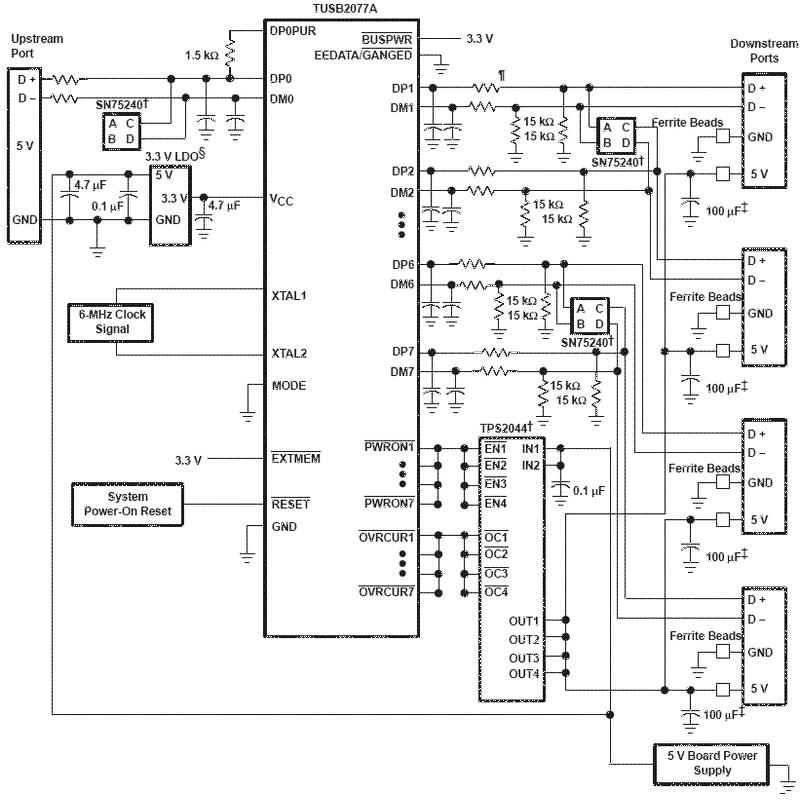

Автор - Aheir, aheir@radiokot.ru
В последнее время ощущается повышенный интерес радиолюбительской общественности к шине USB. Интерес этот проявляется во все возрастающем количестве разработок, использующих этот интерфейс для связи с ПК, причем интерфейс может быть реализован как с помощью специализированных микросхем (типа FT232BM или TUSB3410), так и полностью программными способами. Однако у нас речь пойдет о том, что при таком изобилии USB устройств пользователи не слишком современных ПК сталкиваются с нехваткой портов для подключения этих устройств. Одним из способов решение этой проблемы является использование USB хабов, причем, как оказалось, их вполне возможно изготовить самостоятельно.
Для создания нашего собственного хаба мы будем использовать специализированные чипы TUSB2046 и TUSB2077 от Texas Instr., являющиеся, соответственно, 4- и 7-ми портовыми хабами с поддержкой USB версии 1.1. Конечно, сейчас версия стандарта 1.1 постепенно уходит в прошлое, однако часто в радиолюбительской практике ее более чем достаточно, да и обратная совместимость устройств не слишком сильно снижает функциональность.
Итак, познакомимся с этими микросхемами поподробнее. Выпускаются они в 32- и 48-ми выводном LQFP корпусе соответственно, шаг выводов 0.8 и 0.5 мм. Микросхемы имеют интерфейс для подключения внешней EEPROM памяти, в которой могут храниться уникальные идентификационные коды производителя и типа устройства, однако, поскольку мы такими кодами не располагаем, да и вообще собираем лайт-версию устройства, использовать эту возможность мы не будем. Оба чипа требуют для своего питания напряжения 3.3В и могут работать в режимах питания либо от шины USB, либо от внешнего источника питания. В качестве генератора тактовой частоты мы будем использовать подключенный к микросхеме кварц на 6MHz.
Рассмотрим более подробно назначение некоторых выводов микросхем.
Выводы DP0 и DM0 служат для подключения микросхемы к хосту, т.е. к ПК. DP0 – это Data+, DM0 – Data-. DP и DM выводы с другими индексами служат для подключения дочерних устройств, это так называемые downstream порты. Выводы PWRON служат для индикации активности данного порта и могут использоваться для подключения светодиодов, активный уровень низкий. OVRCUR – входы датчиков перегрузки по току для каждого порта: если в процессе работы на таком входе появляется низкий уровень, соответствующий порт отключается. Эти входы, как и выходы PWRON служат, в основном, для работы со специализированными микросхемами-мониторами питания шины USB и мы их использовать не будем. Низкий уровень на входе EXTMEM активирует интерфейс внешней EEPROM памяти, поэтому нам надо будет подать туда высокий уровень. При отключенной памяти вход EEDATA/GANGED заведует типом мониторинга перегрузки портов: индивидуальный или групповой. Подаем туда 0 для TUSB2077 (групповой мониторинг: при детектировании 0 на любом из входов OVRCUR все порты отключаются), соединяем все входы OVRCUR между собой и подцепляем к Vcс – перегрузки у нас никогда не будет (для TUSB2046 сигнал GANGED имеет обратную полярность, однако поскольку отключения портов не происходит, что туда подавать, 0 или 1, не так важно, главное объединить и OVRCUR и подать на них 1. Для TUSB2046 выводы TSTMODE и TSTPLL/48MCLK определяют частоту тактирования и должны быть заземлены для работы от 6MHz кварца, для TUSB2077 ту же операцию надо проделать с выводом MODE. Вывод BUSPOWER определяет источник питания для хаба и дочерних устройств: шина USB или внешний БП. Например, в режиме питания от шины TUSB2077 отключает 3 последних порта (потому как считается, что больше 4 устройств один канал шины USB по питанию выдержать не может). А оно нам надо? Заземляем этот вывод и говорим хабу, что у него есть внешний источник питания. Вот, в принципе, все то основное, что нам надо знать. У хабов есть еще некоторые выводы, предназначенные для подключения светодиодов или других устройств диагностики и отображения текущего состояния микросхемы, которые могут быть весьма полезны в ряде случаев. Все они описаны в документации на эти чипы.
Таким образом, получаем следующую конфигурацию: 4- или 7-ми портовый хаб, без EEPROM (определяется системой как Generic USB Hub), с питанием от внешнего источника, без защиты от перегрузки портов. Поскольку защиты нет, все же задумывайтесь над тем, что и в каком количестве вы подключаете к хабу и используйте соответствующий блок питания.
В принципе, с некоторыми оговорками, наше включение соответствует следующим типовым схемам: 
У нас, соответственно, не используются мониторы питания TPS2044 и микросхемы защиты от перенапряжения SN75240.
В качестве системы сброса можно использовать RC-цепь, подходящий супервизор или просто подтянуть этот вход к плюсу питания – все работает.
Для получени необходимых для питания хаба 3.3В я использовал LDO-стабилизатор REG102NA-3.3/250 в корпусе SO-8 от того же Texas'a, но здесь также подойдет параметрический стабилизатор, LM317 или просто два последовательных кремниевых диода к +5В (хотя последний вариант все же не желателен).
Несколько удивили резисторы 15к на линиях данных USB, однако без них при подключении хаба к ПК Windows находит на каждом из портов «Неизвестное устройство» и переубедить его не удается. Во всех линиях данных также стоят последовательные резисторы, но здесь как раз все понятно – согласование и защита – они нужны обязательно и номинал их 22-24 ома.
На печатной плате сделана разводка сразу под оба чипа, однако установлены индивидуальные разъемы USB и питания для каждого из них. Это позволит при необходимости разделить плату на две части и использовать только нужную. Если оба чипа установлены на единой плате, то для их питания достаточно одного 3.3В стабилизатора (хотя посадочное место для него есть возле каждого чипа) и питание на второй чип подается посредством перемычки, земля и питание 5В на плате общие.
В принципе, можно 5В с USB разъемов через диоды Шоттки подать на общую шину питания, тогда для работы хаба не потребуется дополнительного внешнего источника питания, но здесь следует очень осторожно подходить к вопросу подключения устройств: все же 7 устройств один USB порт компьютера может по питанию и не вытянуть.
Печатная плата разведена в SL5 и сделана двухсторонней, так что внимательно смотрите, что там куда зеркалить, если дело дойдет до утюга. Дорожки под TUSB2077 0.2мм, шаг выводов 0.5мм. Я паял обычной паяльной станцией. При некоторой сноровке и достаточном количестве флюса пайка весьма качественная, нет ни залипаний, ни непропаев.
В качестве эксперимента, можно соединить вход одного хаба с одним из downstream портов другого – получим 10-ти портовый хаб.
Готовое устройство выглядит так: